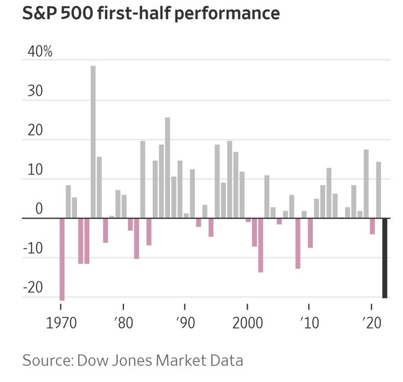
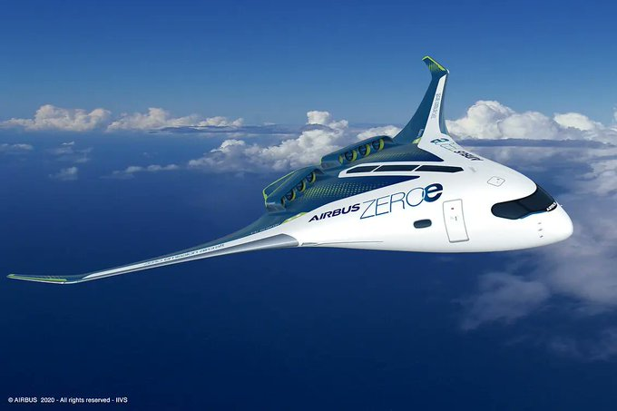

Week 26
H2 View: "European consortium bets big on hydrogen produced green steel.. [A] consortium with its sights set on leading the market for green iron and steel from hydrogen was announced, with plans to mobilise €2.2bn ($2.3bn) of investment"
H2 Fuel News: "ExxonMobil partnership investigates Norwegian green hydrogen and ammonia.. The effort is being made to use H2 for the purpose of decarbonizing the marine industry"
@JoSamps92
@RollsRoyce is entering the #hydrogen production market and acquiring a 54% majority stake in electrolysis stack specialist Hoeller Electrolyzer.
"@PlugPowerInc, Engie New Ventures among founding shareholders of GravitHy scheme to build French plant that will use nuclear and renewables for hydrogen-backed green steel"
Proactive Investors: "AFC Energy says interest in hydrogen projects at 'unpredecented' levels"
Euractiv: "Germany’s Scholz rallies G7 countries behind ‘climate club’ idea..
It will be built on three policies. Firstly, ambitious climate “mitigation” policies to reduce emission intensities of participating economies where members share best practices and work towards a common understanding of the economic impacts of “mitigation” policies, such as through explicit carbon pricing.
A second pillar will be the joint transformation of industry through the industrial decarbonisation agenda, the hydrogen action pact and by expanding markets for green industrial products, which often struggle to compete on price with their more polluting fossil competitors.
The climate club’s third pillar will be partnerships and cooperation, with the statement highlighting the “Just Energy Transition Partnerships” (JETPs), which are schemes tailored to countries like South Africa or India. Countries will receive financial support and technology transfers depending on their level of climate ambition through these JETPs"
Queensland airline Skytrans unveils plans for Australia’s first #hydrogen-fuelled plane.
— Joanna Sampson (@JoSamps92) June 30, 2022
The airline, which operates out of Cairns and flies to Cape York and the Torres Strait, says the first plane will be in the air by 2026. Via @guardian https://t.co/sW0Eg6VqN2

via @elerianm
Asia minor is kicked out of the program, Greece will get the planes
Janes Defense: "Greece submits letter of request for F-35"
Quick let's buy this dip!
Aw shit
The Apollo missions were not dumb tries; had clear goals (Lyndon Johnson knew his shit).
Kennedy just made that one speech, "we go to the Moon because I'm haahd".. that's it. The idea was LBJ's. Clear goal backed with know-how.
Electrification goal: another dumb try. There isn't enough lithium in the world. The electric grid is inefficient and will always be so; the base science is screwed up. Can't "tinker", "take a chance" your way out of this problem.
A lot about US is about "dumb tries". You win by trying a lot, and hopefully 'striking gold'. That approach might be reaching the end of its usefulness. The culture likely formed while exploring the "new lands", all you needed was courage, a push, enough for you to start the journey, the rest would be adventure and hopefully a lot of gains.
But tinkering with a dangerous virus gave us covid. Stupid courage can push you to Mars, but will also kill you there. Crossing the Atlantic to reach new lands was different type of experimentation.. There was still land, air, the downside for failure actually wasn't too high.
Its hilarious.. so much ho/bro energy..
"@wallstreetpro
This did not age well. Remember this guy?"
"EU agrees on landmark regulation to clean up crypto 'Wild West'.. The new law, known as Markets in Crypto-Assets (MiCA), is the first attempt at creating a comprehensive regulatory framework for digital assets in the EU"
World Finance: "Canadian Pacific on track with hydrogen locomotives.. With a focus on the transition to a low-carbon economy, Canadian Pacific has been developing North America’s first line-haul hydrogen locomotive as a solution for freight rail decarbonisation"
H2 Fuel News: "Chevron to pour $2.5 billion into green and blue hydrogen.. Chevron has already invested into Hydrogenious, a liquid organic H2 carrier company, as well as Raven SR, a waste-to-H2 company. The energy giant has also entered into a spectrum of collaboration agreements and memoranda of understanding with various organizations focusing on blue and green hydrogen such a Cummins, Caterpillar and Toyota"
H2 View: "Spanish hydrogen transport solutions firm, H2SITE, announced it has raised €12.5m ($13m) to scale up its technologies for ammonia or methanol cracking to produce hydrogen"
H2 View: "€770,000 ($802,900) have been awarded to chemicals manufacturer, INEOS, by a German state to support a feasibility study for hydrogen production in Köln, Germany, which could cut greenhouse gas (GHG) emissions by over 100,000 tonnes"
H2 View: "The Australian Pilot Energy.. has concluded a Memorandum of Understanding (MoU) with 8 Rivers Capital to accelerate the deployment of 8 Rivers’ 8RH2 blue green hydrogen process and clean ammonia production at the project... 8 Rivers will also secure an offtake option for 172,500 tonnes per annum for clean ammonia-export from the Pilot site"
WION: "New research claims that huge businesses like Coca-Cola and Unilever are misleading consumers by claiming that their plastic packaging is environmentally friendly reports, The Guardian"
The Guardian: "Mystery as Canadian radio station plays Rage Against the Machine song nonstop.. [S]omeone at a pop and soft rock station in Vancouver, Canada, began playing the song Killing in the Name by Rage Against the Machine... By midday, the song had played hundreds of times... prompting online speculation that the singular choice was a protest against layoffs by parent company Rogers Sports and Media"
Not about this bee thing per se, but the world should switch to sealed-off controlled vertical-farming style environments, plus lab-farm meat and related products.. It is baffling humankind is relying on so many natural processes to survive.. Let's take nature out of the natural ;|
"If the bees disappear off the surface of the globe then man would only have four years of life left. No more bees, no more pollination, no more plants, no more animals, no more man."
Not trying to make an incendiary remark on NATO, the org is useful where it is available.
Wooow.. my map shows a drug export route from Belgium to US.. Maybe the NATO connection was key for that..
Voltaire.net: "Ecstasy lab seized on Kleine-Brogel NATO base"
That's a lot.. Where was the shipment going? Doesn't say in the news item. I'd like to keep my trafficking database up-to-date.
Al Monitor: "Syria seizes record 2.3 tonnes of captagon: ministry"
Some sites block copy and paste action; highly annoying. Don't make me
PDF your site and ocrmypdf the whole thing (pulls out text out of
image)..
Already looking ahead to the 'next challenge'? Done with Russia? Speculation: Most can guess where the war is headed.. RU will finalize the conflict in its own terms, and be done attacking shit left and right for a while. NATO will need something to do in the meantime.
Al Jazeera: "NATO declares China a security challenge for the first time"
"The key cornerstone of U.S. and NATO methodology is maneuver warfare. Maneuver warfare depends on communication and synchronization of assets. The U.S. has communication infrastructure down to the four man Infantry Fire Team level and the ability to battle track those formations with almost real-time speed. When everything functions as designed, these smaller formations can achieve much larger effects than their Russian equivalent..
Because of maneuver warfare’s reliance on communication, Russia has invested heavily in Electronic Warfare systems which are capable of shutting down communications and signals across a broad spectrum"
Excessive comm can be a problem; RU is prepared for that bcz is preferred by NATO.
NYT: "On Front Lines, Communication Breakdowns Prove Costly for Ukraine.. In the waning days of the battle for the eastern city of Sievierodonetsk, a Ukrainian National Guard sergeant had a problem: His platoon’s flank was exposed and he needed to tell his men the Russians were approaching.But he couldn’t. For 15 soldiers spread across a defensive line stretching roughly 200 yards, he had only two radios.. By the time the sergeant.. managed to run to his men’s position, three of them had been killed"
"@DanDePetris
The 'rules-based international order' is actually the U.S.-dominated international order. That’s what U.S. officials mean when they use the term"
Al Monitor: "Ukraine war causes major food, fuel price hikes across Middle East"
"Europe Moves to Defuse Tension With Moscow Over Russian Exclave Kaliningrad"

CleanTechnica: "Green Hydrogen In Play For Airbus Hydrogen Hub Scheme.. Air travel has been inching towards decarbonization.. but the pace could pick up as Airbus follows through on its plan to develop hydrogen hubs at airports around the world. Not too long ago, that would involve a copious amount of fossil energy. However, Airbus has just inked an agreement with the global industrial gas firm Linde to help carry out its plan, and Linde has plans for juicing the green hydrogen supply chain""
H2 View: "New hydrogen refuelling station ‘gold standard for speed’.. It was revealed an Austrian food retailer has started up Europe’s ‘most powerful’ hydrogen refuelling station designed and built by Linde Engineering in Völs, Austria"
H2 View: "The Netherlands releases plans for national hydrogen network"
Zawya: "Extreme E announced today a multi-year relationship with ENOWA, NEOM’s energy, water and hydrogen subsidiary, to introduce green hydrogen power to their global sustainable racing series"
Gasunie.nl: "Gasunie starts construction of national hydrogen network in the Netherlands.. Today, Dutch Minister for Climate and Energy Rob Jetten announced new plans for the construction of a national transport network for hydrogen. Gasunie will develop the hydrogen network in the Netherlands in the coming years, after which it will assume the role of TSO (Transmission System Operator). Gasunie will also play an important role in the storage and import of hydrogen"
H2 Fuel News: "Hydrogen fuel cell patents rise, with China leading the way"
Green Shipping Would Add Just 8 Cents to a Pair of #Nikes - Running ships on #renewablehydrogen has almost no impact on the price of consumer goods from trainers to televisions - https://t.co/QOH5Sq9srL #HydrogenNow #HydrogenEconomy #HydrogenNews #H2 #Hydrogen #FuelCells pic.twitter.com/6DOHm3A6lo
— Fuel Cells Works (@fuelcellsworks) June 29, 2022
The Mandarin: "Agritech startups have grown by more than 80% since 2012... Along with the world’s largest technology-focused investment fund, they’re injecting around US$200 million into vertical indoor farming startup 'Plenty'"
"@sturdyAlex
'I'm absolutely astonished', @andrealeadsom says, 'that Nicola Sturgeon is allocating twenty million quid of taxpayers' money on a referendum... It's an SNP obsession, a vanity project.'
How much has the Tory obsession, the Brexit vanity project cost the UK so far, Ms Leadsom"
"@ExpectedValues
FAANG Portfolio is down -39.17% YTD and going lower. Global REAL ESTATE is next. Real estate's rising prices create an illusion of strong fundamentals.
H2 Fuel News: "Gasgrid Finland mandated to promote hydrogen infrastructure development.. The Finnish government is also mandating that this occurs on both a national and international level"
H2 View: "CMIC Enhances its Positioning in Hydrogen Sector by Investing a Hydrogen-Powered Truck Leasing Platform"
H2 View: "Queensland Government funding fast-tracks Gladstone hydrogen hub. The Palaszczuk Government has committed $15 million to support development of a publicly owned, large-scale hydrogen export facility in Gladstone.
Deputy Premier Steven Miles – who just returned from Japan to promote investment opportunities in Queensland’s renewable energy – says the funding will support development of a large-scale electrolysis and liquefaction project in Central Queensland"
@heliogeninc
We are excited to join the @FTSERussell 3000 Index.
H2 View: "SunHydrogen, Inc. (OTC: HYSR), the developer of a breakthrough technology to produce renewable hydrogen using sunlight and water, provided a Q2 update on the company’s progress toward multiple planned 2022 milestones... SunHydrogen shared a Q1 update detailing the developmental milestones required for a production-quality prototype of the company’s nanoparticle-based green hydrogen technology by the end of Q4 2022"
H2 View: "The hydrogen plant in NEOM, Saudi Arabia’s $500-billion futuristic city, will be the first of its kind to produce green hydrogen at a level that can be sold, according to Alicia Eastman, co-founder and managing director at Intercontinental Energy"
H2 Fuel News: "NanoSUN and Reynolds Logistics have partnered in attempt to boost hydrogen-powered vehicle usage as they set out to deliver hydrogen refuelling services to end users in the UK and Ireland"
H2 View: "Saudi Arabian green hydrogen project, NEOM, has called on ABL Group’s Longitude Engineering to provide engineering support to Air Products to export green hydrogen"
Arab News: "Transition to low-carbon alternatives including green and blue hydrogen demands huge investments and a marketplace that needs collaboration between different nations, said Nabil Nuaim, Saudi Aramco’s chief digital officer... Nuaim also said that Aramco is looking at options to reduce the cost of hydrogen production and transport, and the company is checking.. existing pipelines"
NS2 is currently shut off. Hopefully is enabled one day to transport blue H2.
EnergyNews: "[02/2022] It is estimated that the percentage of hydrogen in future pipelines such as Nord Stream would reach 70 percent, according to Gazprom"
Not that any of that matters now; JB net popularity sank further, -%16
Kamala attacked JB now she is VP. Actually attacking can be more useful, because if picked as VP candidate that can sell better, the message would be 'see even my biggest detractor is in my corner now'.
During Dem debates Gabbard was likely making a VP play (attacked Kamala, the other likely non-white female candidate -competition-). Now looks like some at Fox making another VP play for her? As Trump VP if he runs again?
Nationalists gaslight. Asia Minor relation to the seas could simply be explained by looking at the other nations in the area, but no... We have to come up with some bed time story about a "migrant" who is "new" and "different" to the area because such narrative -at one point- was useful (it isn't even useful anymore, on top of being a blatant lie).
Romans were always a land-centric force, they saw the sea as a way to transport land troops for subsequent land invasion. When they used the sea they tried to invent mechanisms to merely complement their land strength, sometimes in bizarre ways. One invention was a huge landing platform bolted in the middle of the ship, plan was to pull it down during ship-to-ship conflict on top of the other ship so regular legionaires can rush over there and do legionaire shit.. But the mechanism wasn't designed well it screwed up the balance of the ships, they routinely sank.
There was one Greek ship in the 1900s Georgios Averof that caused huge damage on the entire Otto navy, allowing Greeks to take more Aegean islands. That wasn't because Greeks "like the sea more", that ship used British guns and French boilers. Ship was made in Italy but Italy too had fallen behind in its sea control comparatively speaking. So much so that when Hitler made an alliance with fascist Italy the alliance wasn't seen to have brought more reach for either of them; a land power allied with another land power.
Anatolia isn't averse to the seas, no more or less than other Medi countries. Anatolian interest did not vane, but ocean capable vessels developed in Western Europe surpassed theirs, and they lost whatever edge they had on naval tech.
😂 😂 😂
"Even though TR is a peninsula the lack of emphasis placed on navy proves people of Turks came from the steppes, a land based culture"
"@sloth_bucket
breaking bad is not about drugs it’s about the failure of the american health care system"
Are you the Magister Equitum over there bitch?
NBC: "[Judge] Alito [said] that the Justices who previously backed 'Roe' were wrong"
Roe overturn open up possibilities for internal Dem shuffling; the old guard lost face, the issue senior shitlibs bang on the drum constantly for has been lost - now the young cadres can hit them on the head with this to take their place.
There was no other way that stuff could have gone down... US is getting out, they are coming in. End of story. Tali had to come in strong (possibly remembering the ass-kicking they received decades earlier), go blitzkrieg to create a psyc scare factor; AFG army had to think "OMG US is leaving" along with "OMG Tali is coming in". That was their goal and they succeeded. Of course it looked bad for US, it sucked. But on the whole these people are poor, live out of shoddy shacks with a few sheep
Why? Because they caused embarrassment during US pullout? Get over it.
"Biden aides seek to unlock Afghan reserves without enriching Taliban"
They are right to doubt
CNN: "Biden officials privately doubt that Ukraine can win back all of its territory"
IHS Markit: "Germany fast tracks proposal for Norwegian blue and green hydrogen pipeline.. Norway is seeking to 'rapidly' firm up plans to export blue and green hydrogen it produces to Germany, potentially via a pipeline that would rival one being developed in Denmark... The nations jointly agreed to conduct a feasibility study at a 16 March meeting between Norwegian Prime Minister Jonas Gahr Støre, Norwegian Petroleum and Energy minister Terje Aasland, and German Minister of Trade and Industry Jan Christian Vestre"
H2 Central: "Germany and the United Arab Emirates will hold further talks on hydrogen and clean energy this week as the European country seeks long-term solutions to wean itself off Russian gas in the wake of Moscow’s attack on Ukraine...
The OPEC member is investing in the production of blue hydrogen, which is made from natural gas in a process that captures carbon emissions instead of allowing them to be released into the atmosphere"
"[Shell] Puristar® R0-20 is a robust, versatile, and proven catalyst that excels at removing trace oxygen from the hydrogen stream following electrolysis.. purification is a critical step required for further processing, transport, and usage of hydrogen as an energy source or chemical feedstock"
H2 View: "German hydrogen-powered truck revealed.. Clean Logistics unveiled its new hydrogen-powered truck to the public at Stade Airport in Lower Saxony, Germany. Dubbed, Fyuriant, the model is powered by two 120kW PRISMA fuel cell systems, developed by Shanghai-based REFIRE technologies, providing a milestone for the two companies who hope to usher in a new era of clean road freight transport.
The new truck is equipped with a fuel tank which can carry 43kg of compressed hydrogen, with the truck offering a range of over 400km, with a refuelling time of less than 15 minutes, the company said"
H2 View: "[South African] Government Commits to Supporting a Hydrogen Project in The Western Cape""
"@EnergyNews_Biz
The consortium H2 Green Valley, led by REN, will invest 28.5 million euros to build in Sines, by 2025, the first 10 kilometers of a new pipeline 100% prepared to transport green hydrogen, according to Negócios"
Hey I hope this transition happens. The current energy shortage could still have been avoided though... Timely investment in H2 and CCS would have guaranteed enough supply of clean fuel no matter the primary energy source. Transition could have been smooth. Instead we are in a street-fight.
"In the first quarter of 2022, Spain already comprised 20 percent of the green hydrogen projects worldwide. That placed it in second place behind only the United States, where over half the projects were located, according to data from consulting firm Wood Mackenzie"
CBS: "Attorneys General in 22 states issue joint statement reaffirming abortion protections"
Forbes: "George Noble started his career at Fidelity Investments in the early 1980s working for stockpicking legend Peter Lynch, then running the top-performing Fidelity Overseas Fund.. The broad market downturn so far is just the beginning. 'This decline will shock,' he says. 'Interest rates and yields are going higher. Equities are toast.' There will be no soft landing. 'They’re not going to get inflation down until the economy breaks,' but the Fed has no choice. 'If they don’t raise rates, we’re on the road to Weimar.' He’s referring of course to the hyperinflation of Weimar Germany, where by 1923 goods cost a trillion times more than five years prior"
For a long time Chinese (and most of the world) have been moving forward in an auto-pilot mode on grand innovation direction. Leave it to the Americans to try out the long-term trends, directions, you just take the idea, implement it better. Can't argue with the cost side, it could more profitable simply to follow. But US errs, and in past few decades errs big. The dream machine is generating too much junk, tech direction is relying on too many stupid people and I believe more than a few countries started to realize the situation
Just because something has "electric", "electromagnetic" in its name doesn't mean that thing is better. Gases, liquids, perform many functions perfectly well, and they are reliable. This is true for fuel as it is for power generation, heating, or cooling, or in this case, launching an entire aircraft.
Wiki: "The Electromagnetic Aircraft Launch System (EMALS) is a type of aircraft launching system.. [developed for] the United States Navy. The system launches carrier-based aircraft by means of a catapult employing a linear induction motor rather than the conventional steam piston.. a highly critical 2018 report from the Pentagon.. emphasized that reliability of EMALS leaves much to be desired and that the average rate of critical failures is nine times higher than the Navy's threshold requirements"
Hindustan Times: "Indian Navy has questions on China’s new aircraft carrier Fujian.. While Fujian is touted to take on the US military power in the coming decade in the Indo-Pacific, serving Indian Navy Admirals are posing some fundamental questions on the operability of the Chinese carrier, which is said to be equipped with [EMALS].. As of now, only USS Gerald Ford is equipped with [EMALS].. The challenge for Super carrier Gerald Ford is scaling a relatively new technology to handle the required weights and power"
Politico: "Germany gets tough on Brexit.. New German Chancellor Olaf Scholz has Boris Johnson firmly in his sights.. German officials say there is cross-party consensus in Germany on the need to protect the EU single market — the destination of about 70 percent of German exports — but acknowledged Berlin has dialled up the rhetoric in recent weeks.. Berlin has also judged this is the appropriate time to send a 'blunter' message that the U.K. must abandon any ambitions to rewrite the protocol, they added. Germany also wants to dispel any suggestion that the row is merely an issue between the U.K. and Ireland only"
There is also that pile of cash the US froze; bondholders can ask US to be paid from that stash.
CNBC: "Russia has entered its first major foreign debt default for over a century, after a grace period on two international bond payments lapsed on Sunday night... The Kremlin has rejected the claim that Russia is in default.. telling a press call this morning that Russia made the bond payments due in May but they have been blocked by Euroclear due to Western sanctions, rendering the non-delivery of payments 'not [Russia’s] problem.'"
UKR did not implement Minsk agreements, and sent bombing sorties toward Russian seperatists with those little toy planes from "Britain's other bitch" assuming an offensive posture.. All with the support of US/UK. You poked the bear and now the bear is coming for you. What were they thinking?
"Support Ukraine" rhetoric is also partly there to cover up previous fuck ups of the West, especially of Britain and US. If we treat UKR gov as good capable leaders only lacking some weapons under the attack of a mean Russia, then their mistakes get erased, forgotten
AFP: "Foreign fighters who have joined Ukrainian forces battling Russia's invasion have been shocked by the brutality of the war and some say that disillusionment is creeping in"
The Guardian: "Even today, there is some dissension in the west about what the objectives in Ukraine should be. In contrast to the leaders of the Baltic states, Poland, and the United Kingdom, the French president, Emmanuel Macron, and German chancellor, Olaf Scholz, are not committed to ensuring that Russia is defeated militarily, and the Italian prime minister, Mario Draghi, has proposed a peace framework, with an immediate ceasefire at the top of the agenda"
"@DanDePetris
Politicians who are so opposed to settling the war in Ukraine should do their due diligence and consider an even uglier contingency: Russia gains more ground as the war proceeds, cements those gains"
Foreign Policy: "[Gabbard, Davis] As much as Ukraine welcomes every piece of equipment, however, the deliveries have been a clunky mixture of modern and antiquated, Western and Soviet. Numerous systems require specialized training, specific maintenance systems, and ammunition of various calibers that are often mutually exclusive to each weapon system. All of this requires a massive and complicated logistics system to keep the weapons supplied and functioning—one that doesn’t currently exist in Ukraine and continues to be improvised...
Policies in Kyiv and Washington seem to ignore these battlefield realities... While there is still time, and Kyiv still controls 80 percent of its territory, a change in U.S. policy would provide a chance to save Ukrainian lives and prevent further territorial losses. At minimum, the Biden administration should de-emphasize its goals of weakening Russia and instead prioritize diplomacy, helping Kyiv and Moscow find a negotiated end to the war"
H2 Central: "A leading group of German companies along with Australia’s Fortescue Future Industries (FFI) has released a green hydrogen roadmap, outlining a set of recommendations for government and industry, to meet the ambitious target of importing large amounts of green hydrogen from Australia to Germany.
The Green Hydrogen Taskforce, created earlier this year, is a collaborative effort between FFI, and some of the strongest energy, industrial, and technology companies in Germany, including Covestro, E.ON, Linde, Luthardt, SAP, Schaeffler, thyssenkrupp Nucera and thyssenkrupp Uhde"
If m t / y means megaton per year that translates to 10 GW of output. Good. And we need more. A few more at this scale.
All fossil producers need to generate this stuff.. as much as humanly possible. Green, blue, any color.
"@H2Standard
The prospects for green hydrogen have been given a boost as a market landgrab by oil and gas majors continues. June has seen BP and TotalEnergies buying stakes in projects with a combined production capacity of 2.6 m t/y"
Looks simple - good recipe
Kenobi finale was ⭐ ⭐ ⭐ ⭐ ⭐
CNBC: "El Salvador's $425 million bitcoin experiment isn't saving the country's finances. The government's crypto coffers have been cut in half, bitcoin adoption nationwide isn't really taking off, and the country has big upcoming debt payments"
TDB: "And yet, even with the challenge of pandemic recovery, we are not facing 'stagflation,' a word that ruled our economic lives 40 years ago and now is a term that I have to explain to my younger students. Stagflation was something that once seemed impossible: high inflation, low growth, and high unemployment all at the same time. This happened in the 1970s, but it isn’t happening now—or at least, it isn’t happening yet—and it’s one reason treating 2022 as if it’s 1979 doesn’t make much sense.Let’s also admit an obvious political reality about the expectations of the American voter: Many of the people who are fed up with inflation in 2022 are angry mostly because until about a year ago, they’d never actually experienced it. Yes, it’s been a rough year, but in 1979 Americans were despairing because high inflation had already been around for several years. Richard Nixon, Gerald Ford, and Carter all tussled with it. We tried everything from wage and price controls to 'Whip inflation now' sloganeering—as if consumers could join the fight by wearing buttons.The same is true of interest rates. Today’s younger consumers may be shocked that mortgages are breaking 6 percent—but again, this is because they have become accustomed to ridiculously low rates. Even 50 years ago, the average rates were about 7 percent; they’ve been lower than that for two decades now"
Focker has a friend, e-jagoff.. He likes battery electric cars.
{kind=link}
You got your answer didn't you, Focker.
You are not in the circle of trust anymore 👌
US libertarian right there.
NYT: "[Peter Thiel interview, 2017] It’s like, even if you appointed a whole series of conservative Supreme Court justices, I’m not sure that Roe v. Wade would get overturned.. I don’t know if people even care about the Supreme Court"
German libertarians supported ending the ban - because of, you know, liberty.
NYT: "Germany Ends Ban on Abortion Advertisement.. The vote to scrap the law came on the same day that Roe v. Wade was overturned by the U.S. Supreme Court.
Lawmakers voted on Friday to end a Nazi-era ban on the advertisement of abortion services, a measure that had effectively criminalized doctors who provided information about the procedure.The law, though ignored for years, had recently prompted several high-profile legal cases against doctors. That, in turn, led to a sustained campaign by abortion-rights activists for repeal of the advertising ban, which Germany’s relatively new government had made a goal"
Manchin: "I trusted Justice Gorsuch and Justice Kavanaugh when they testified under oath that they also believed Roe v. Wade was settled legal precedent and I am alarmed they chose to reject the stability the ruling has provided for two generations of Americans."
And now they will say 'vote for us to bring back Roe'; the culture war dividend never ends.
"@JeffreyStClair3
The leadership of the Democratic Party, which for 20 years has said the only reason to vote for them is to protect Roe, should resign en masse. Their failure is absolute"
IOW how to do incremental fixes on an incremental fix which itself wasn't good enough to begin with.. Reminds me of battery electric cars as a "green solution".
"Dems weigh new plan to defuse Obamacare subsidy bomb"
FT: "US and allies launch initiative to help Pacific Island nations"
RU had 10 times more artillery attacks for that day than UKR
import pandas as pd
d = 20220622
df = pd.read_csv('events_latest.csv')
dfr = df[ (df.a_rus_b==1) & (df.date==d) ]
print ("ru artillery:", dfr.t_artillery_b.sum())
dfu = df[ (df.a_ukr_b==1) & (df.date==d) ]
print ("ukr artillery:", dfu.t_artillery_b.sum())
ru artillery: 61
ukr artillery: 6
Code sifts through RU, UKR media sources, and pulls out relevant info automagically using "high dimensional ad-hoc nonlinear statistics" sometimes called machine learning, but these days usually mistakenly called "AI".
New data source for UKR/RU war.. Seems to be updated regularly , and shares areas of control in a simple file!
"@adam_tooze
'One of the most frustrating aspects of America’s Ukraine debate is its degree of self-deception about global unity. The assumption is false.' Spot on from @EdwardGLuce"
NYT: "Russian Elites Show No Sign of Broad Challenge to Putin"
Washington Examier: "After a month of holding out, the Ukrainian high command ordered the remaining defenders in Severodonetsk, the administrative capital of Luhansk, to beat a tactical retreat out of the city and fortify their defenses in Lysychansk, the sister city to the west of the Seversky Donets River. 'Remaining in positions smashed to pieces over many months just for the sake of staying there does not make sense,' Luhansk Gov. Serhiy Haidai said...
Russian forces were making slow progress in the Severodonetsk pocket for weeks, using their advantage in artillery to pummel everything in their path before sending ground forces into the area. Russia’s war plan, to put it in the most unsophisticated way possible, was to overwhelm the Ukrainian defenders with constant bombardment until they relented. For Ukraine, the only other alternative would have been to stick around and risk total encirclement — a strategy that would have been indefensible, if not insane, when the Ukrainian military is already losing perhaps 200 soldiers a day"